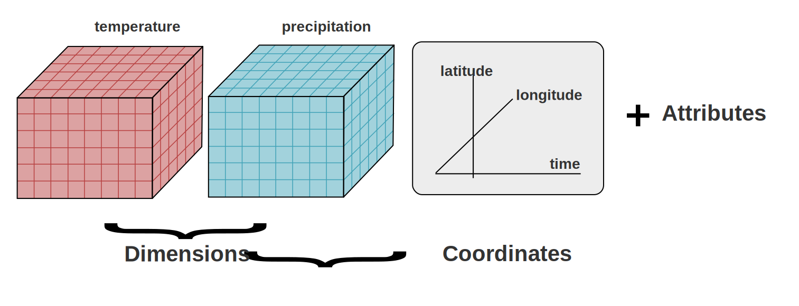

The netCDF files#
Climate data must capture the complexity of the phenomena they represent, including not just the values themselves, but also the geographic coordinates where the data was collected and the time when it occurred. As a result, the data files can grow rapidly in size due to the need to analyze long periods and large geographical areas. This makes it impractical to store them in text-based formats like CSV or other tables. Instead, climate data is typically stored in a binary format, which is not directly readable by humans.
One of the most common binary formats for climate data is netCDF, which uses the .nc file extension.
A netCDF file is organized into three main parts:
Dimensions: these are the “axes” of the data, like time, latitude, and longitude, which define the shape of the data grid.
Variables: these are the actual data values, such as temperature, precipitation, humidity, or a drought index, arranged according to the dimensions.
Attributes: these provide additional information about the data (metadata), like units of measurement or descriptions, to help understand what the variables represent.

CC BY-NC-SA
Xarray library#
In our analysis, we’ll primarily work with netCDF files. So, let’s learn how to open and examine a nc file using one of the drought indices we’ll be using, the Standard Precipitation Index with an accumulation period of 12 months (SPI12).
Since netCDF files are in a binary format, specific software or libraries are required to manage them files. In particular we will use a library named Xarray.
Xarray is a library used to handle multi-dimensional arrays, as in the case of the netCDF files. It has 2 fundamental data structures:
DataArray, that stores a single multi-dimensional variable and its coordinates
Dataset, that stores multiple variables and their coordinates
As first thing we install the libraries xarray and netCDF4:
!pip install xarray -q
!pip install netCDF4 -q
import them:
import xarray as xr
import netCDF4 as nc
and open our sample file SPI12_gamma_global_era5_moda_ref1991to2020_202401.nc using the function open_dataset:
file_path = "./SPI12_gamma_global_era5_moda_ref1991to2020_202401.nc"
dataset = xr.open_dataset(file_path)
Now let’s see a preview of the dataset contents:
dataset
<xarray.Dataset> Size: 8MB
Dimensions: (time: 1, lat: 721, lon: 1440)
Coordinates:
* time (time) datetime64[ns] 8B 2024-01-01T06:00:00
* lat (lat) float64 6kB 90.0 89.75 89.5 89.25 ... -89.5 -89.75 -90.0
* lon (lon) float64 12kB -180.0 -179.8 -179.5 ... 179.2 179.5 179.8
Data variables:
SPI12 (time, lat, lon) float64 8MB ...
Attributes:
title: SPI12
description: Drought Index: Standardized Drought Index calculated accord...
history: Created 03/04/2024 21:04:18 using DRYFALL.
institution: ECMWF
source: DRYFALL v0.1As we can see, the dataset has five key components:
DimensionsCoordinatesData variablesIndexesAttributes
Let’s examine each of them in detail.
1. Dimensions#
Dimensions define the axes along which the data is organized. They represent the structure of the dataset.
In our dataset, the dimensions are time, lat (latitude), and lon (longitude).
The time might represent different moments (e.g., hours, days, months or years).
The latitude refers to the vertical position on the Earth, from the North Pole to the South Pole.
The longitude refers to the horizontal position, from the Prime Meridian eastward and westward around the globe.
The numbers associated with the dimensions represent the size (length) of each dimension, indicating how many data points or values exist along each axis.
In practice the numbers next to each dimension tell you how detailed the data is along that axis. the higher the number, the more detailed (or higher resolution) the data is.
There is only 1 time point in our dataset: this means that the data represents a single snapshot in time, in particular the month of January 2024.
There are 721 latitude points in our dataset, this means that the data is divided into 721 evenly spaced points from the North Pole (90 degrees) to the South Pole (-90 degrees). This gives a very detailed or high-resolution grid for latitude.
Our data is divided into 1440 evenly spaced points along the longitude range from -180 to 180 degrees, again providing a detailed or high-resolution grid for longitude.
By examining the extreme degrees, we can confirm that this dataset has global coverage, ranging from 90° to -90° latitude and from -180° to 180° longitude.
The dataset creates a grid that spans 1 point in time, 721 points in latitude, and 1440 points in longitude. This gives a total of 1 x 721 x 1440 = 1,037,040 grid points (cells), where each point has a size of .25 degrees and contains a value for the data variable SPI12. Each of these 1,037,040 points represents a specific location on Earth at a specific time.
2. Coordinates#
Coordinates provide specific values for each point along the dimensions. They help locate the data points in the multi-dimensional space defined by the dimensions.
In our case:
For the time dimension, the coordinate is a specific date and time (e.g., 2024-01-01 06:00:00).
For the lat dimension, coordinates are specific latitudes (e.g., 90.0, 89.75, etc.).
For the lon dimension, coordinates are specific longitudes (e.g., -180.0, -179.8, etc.).
3. Data variables#
Data variables are the actual data stored in the dataset. These variables depend on the dimensions and are typically the main focus of the dataset.
In our case, the data variable is SPI12, which stores the Standardized Precipitation Index values. Each value in SPI12 is linked to a specific combination of time, lat, and lon, meaning it represents the SPI12 value at a certain point in time and space.
4. Indexes#
Indexes in xarray serve a similar purpose as they do in a Pandas DataFrame. They help efficiently label and access data along the dimensions (time, lat, and lon). PandasIndex refers to the type of index used by xarray for a particular dimension, which is derived from the Pandas library.
5. Attributes#
Attributes provide metadata about the dataset or specific data variables. They include descriptive information that helps users understand the context, origin, or purpose of the data.
titledescribes what the dataset is about (e.g., SPI12).descriptionexplains what the data represents (e.g., “Drought Index: Standardized Drought Index calculated according…”).historyrecords the creation process of the data.institutionindicates where or by whom the data was generated (e.g., ECMWF).sourcerefers to the specific tool or method used to create the data, in this case the DRYFALL library.
üí° Tips#
To learn more about netCDF data format read the What are NetCDF files and how can I read them guide by ECMWF.
The CF Conventions serve as a valuable reference for climate data metadata.
Here you can find the documentation of Xarray library and a gallery of its potential usage: